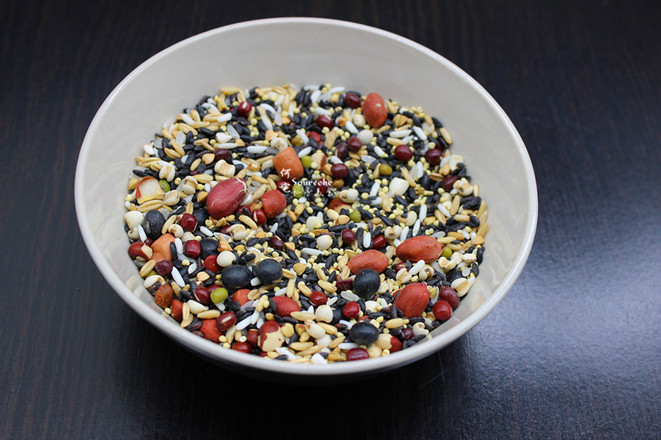
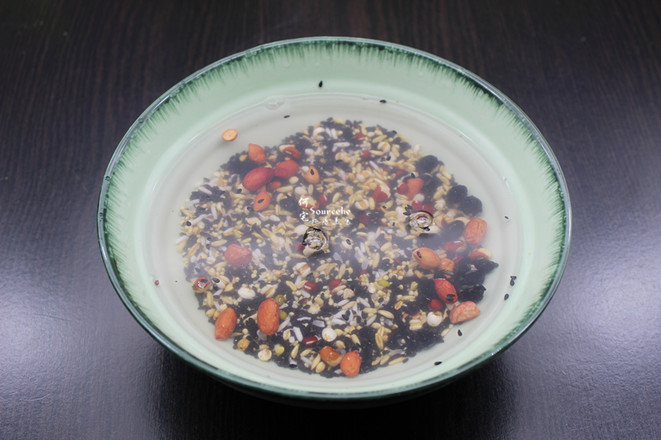
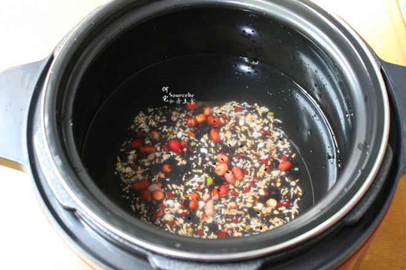
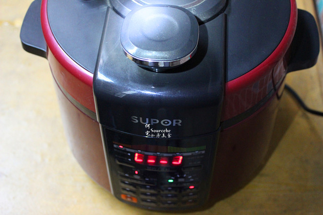
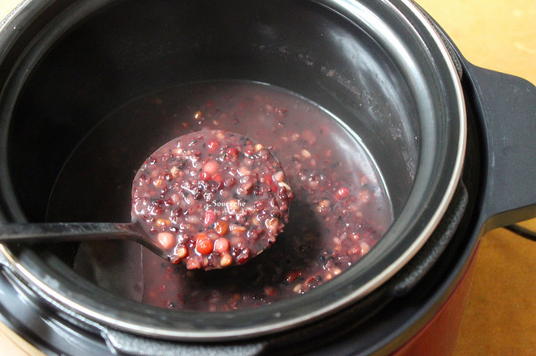
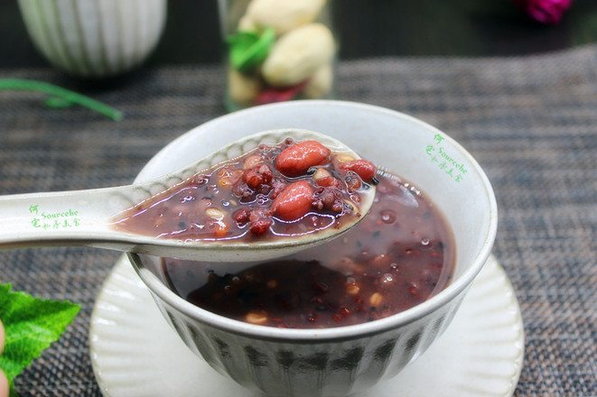
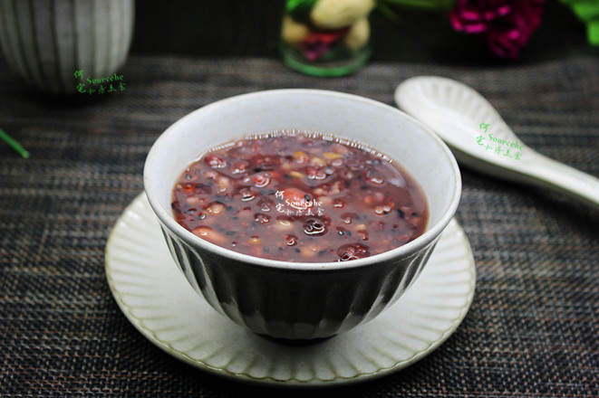
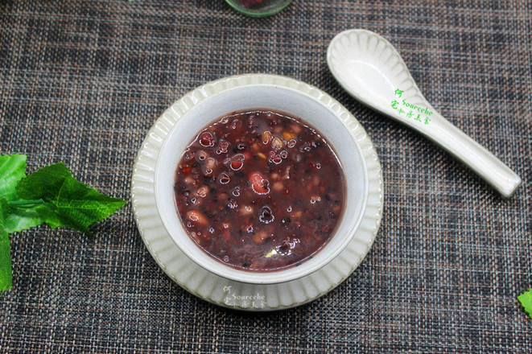
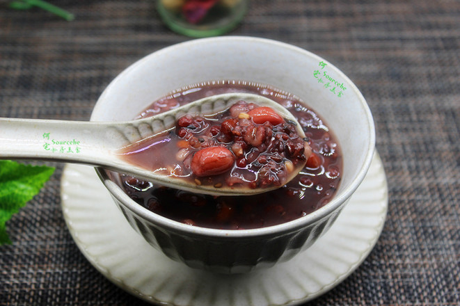

营养价值
““五谷为养，五果为助，王畜为宜，五菜为充”等多方面的粥方，旁涉博大精深的饮食文化、养生文化和中药文化，以及与之相关的诗词歌赋等。五味杂陈，各取所需。 它的主味是饮食养生，借粥而行之，合理膳食乃四大健康基石之首11种极富营养价值的食材熬煮出来。这碗貌似平常的粥，却饱含着“至道无痕”的大义，不愧是冬季养生暖身第一粥。 ”
““五谷为养，五果为助，王畜为宜，五菜为充”等多方面的粥方，旁涉博大精深的饮食文化、养生文化和中药文化，以及与之相关的诗词歌赋等。五味杂陈，各取所需。 它的主味是饮食养生，借粥而行之，合理膳食乃四大健康基石之首11种极富营养价值的食材熬煮出来。这碗貌似平常的粥，却饱含着“至道无痕”的大义，不愧是冬季养生暖身第一粥。 ”
准备好五谷粥米，除芝麻外等等各种食材按1:1用量；

食材洗净，浸泡10分钟；如果是免洗食材，可以免去清香

把食材倒入压力锅，加入适量的水；PS：水与食材的比例5:1

按粥键，约30分钟即可；PS：每个压力锅不过，时间略有差异

熬煮好的粥，会自动提醒并且指示灯再保温状态提示，开盖放白砂糖拌均即可。如果喜欢吃原味的可以不放糖。

养胃香浓的粥就好了，热气腾腾，满满的爱，给家人。



